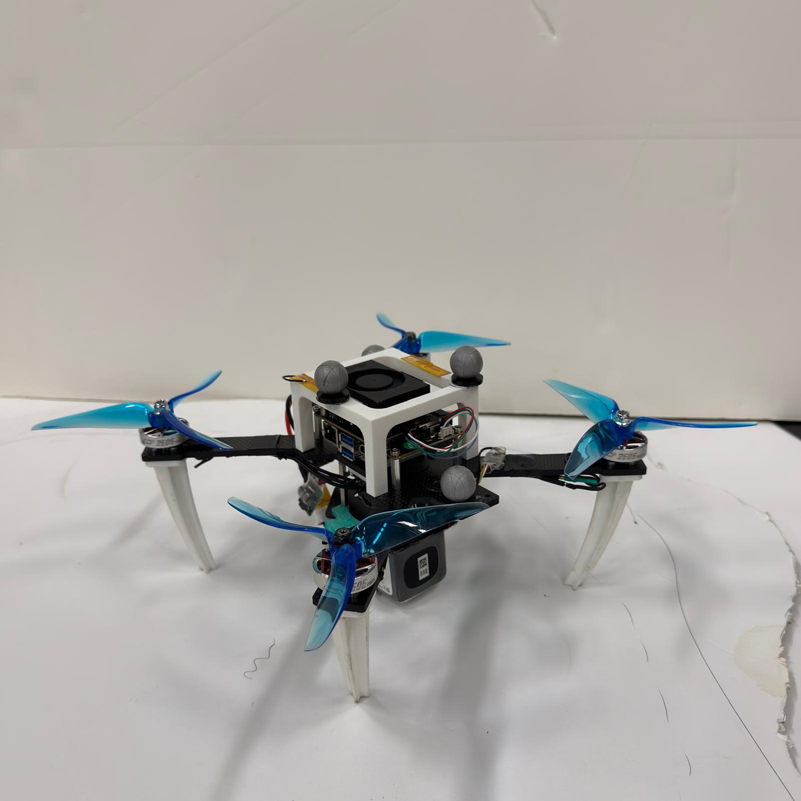
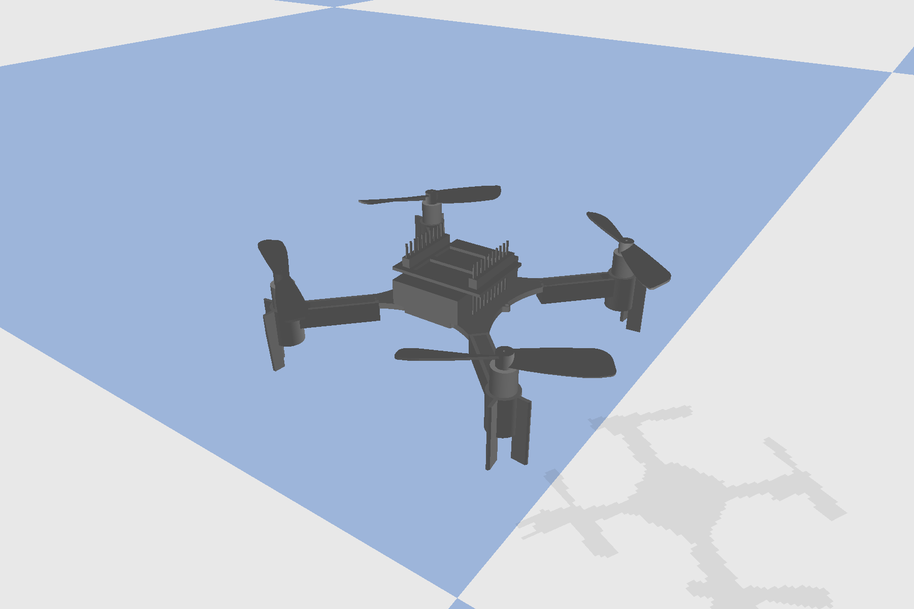
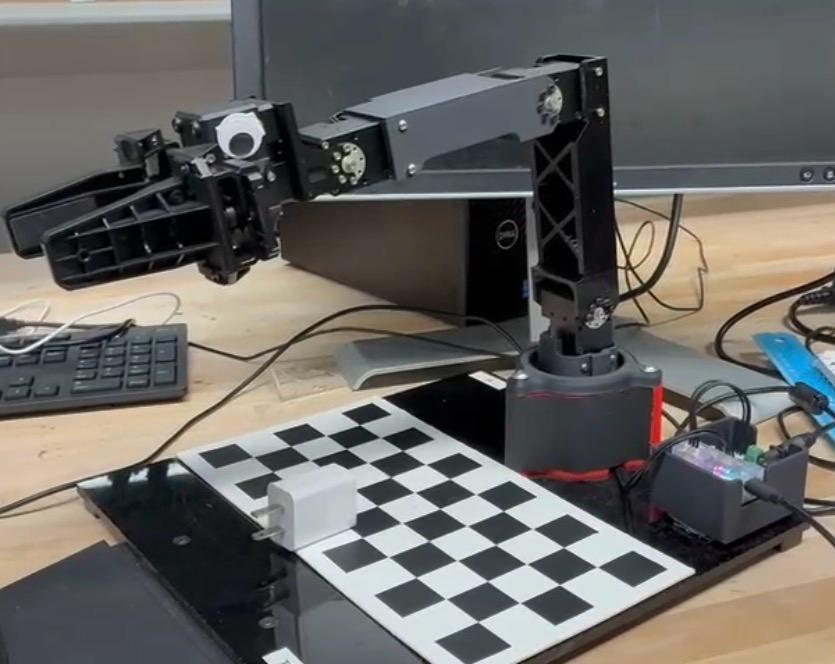
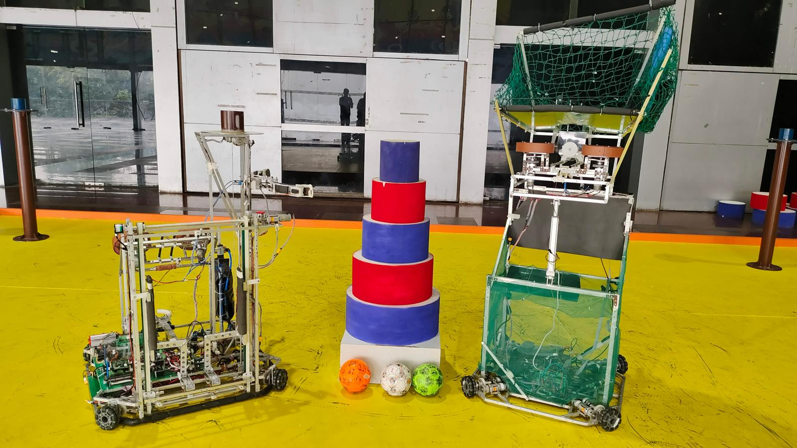
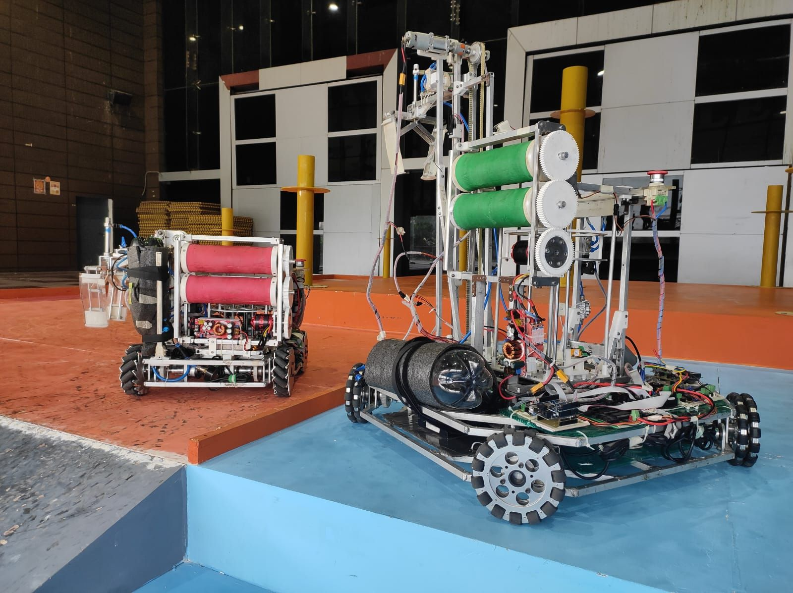

01Open to robotics and embedded systems roles
Building intelligence for robots.
I’m a robotics engineer and WPI graduate student building autonomous flight controllers, reinforcement-learning systems, and production embedded firmware. My work connects robot software to demanding real-world hardware.
Robotics software & controlsRobot learningEmbedded firmwarePerception
Technical toolkit
Programming & platforms
C++PythonCROS 2Linux
Controls & autonomy
PIDINDIPX4BetaflightNMPCTrajectory GenerationTask & Motion Planning
Learning & simulation
PyTorchReinforcement LearningPPOMuJoCoGazebo
Embedded systems
STM32FreeRTOSCANBLEBootloaders & OTA
Perception
Computer VisionVisual-Inertial OdometryDepth EstimationPoint Clouds
Featured projects
Projects by discipline
Choose a role to explore relevant work.
01
Controls & autonomy
Control design, planning, estimation, and autonomous robot behavior.
Flight controlsINDI Flight Control & Benchmarking→
Controls · RLCable-Suspended Payload Control→
Autonomy · PlanningTask & Motion Planning→
H3Humanoid roboticsHuBot 3.0→

Aerial roboticsQuadrotor Control→
ManipulationOpenManipulator Control→
Competition roboticsROBOCON 2022→
Competition roboticsROBOCON 2023→02
Robot learning
Policy learning, reward design, simulation, and multi-agent systems.
04
Perception & estimation
Visual sensing, state estimation, depth, and 3D reconstruction.
03
Embedded systems
Firmware, real-time control, communication, and hardware integration.
Experience
Graduate Research Volunteer
Aerial Controls & Perception Lab · WPI
Developing autonomous control and onboard payload-state estimation for quadrotors carrying cable-suspended loads. Built a GPU-accelerated PPO training pipeline with 2,048 parallel environments at approximately 33K transitions/s—about 30× faster than the CPU pipeline—and integrated INDI flight control into Betaflight.
Embedded Software Engineer
BGAUSS Auto Pvt. Ltd.
Developed production VCU and instrument-cluster firmware supporting approximately 2,000 electric two-wheelers per month. Built BLE OTA updates deployed across approximately 10,000 vehicles, reducing update time from two hours to five minutes and improving update success from about 90% to 97%. Reduced safety-feature false triggers from approximately 50% to 5% through vehicle-state gating and field validation.
VCU
About
Robotics by profession. Curious by nature.
I’m Anirudh, a Robotics Engineering graduate student at Worcester Polytechnic Institute. Before graduate school, I worked as an Embedded Software Engineer at BGAUSS Auto, building production software for electric two-wheelers.
Outside robotics, I enjoy gaming, watching sci-fi thrillers, and photography. Games keep me curious about interactive worlds, sci-fi feeds my imagination, and photography gives me a reason to slow down and notice the details around me.
Gaming
Interactive worlds, competition, and a good challenge.
Sci-fi thrillers
Big ideas, unfamiliar worlds, and stories that keep unfolding.
Photography
Landscapes, everyday moments, and details worth preserving.
Education
Aug 2025 — May 2027 (expected)
Worcester Polytechnic Institute
M.S. Robotics Engineering · GPA 4.0/4.0
Aug 2019 — May 2023
College of Engineering Pune
B.Tech Instrumentation & Control Engineering · Minor in Computer Science · GPA 8.42/10
Recognition & leadership
Team Captain & Secretary
Robot Study Circle · COEP
Led a 30-member multidisciplinary team and development of 10+ robotic systems and prototypes. Coordinated technical priorities within an approximately ₹12 lakh annual club budget and secured approximately ₹1 lakh in external sponsorship. The ROBOCON 2023 team placed fifth nationally among 50+ teams.
Published patent application
Instrument Cluster for Use with Vehicle
Application no. 202421047935.
Robotics publication · ARMS’21
Development of Robotic Arm Manipulator mounted on Self Balancing Two-Wheeled Mobile Robot.
Awards
Second place, MATLAB Modelling Award at ROBOCON 2023; Dedication and Invaluable Contribution Award, COEP (2023); second place, Virtual Robotics at MindSpark’21.
Start a conversation
Have a machine worth making smarter?
I’m looking for opportunities in embedded software, robotics, controls, and autonomous systems.
anirudhnallawar02@gmail.com ↗